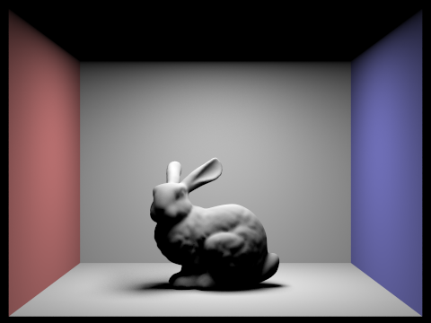

CS 184/284A: Computer Graphics and Imaging, Spring 2024
Homework 3: Pathtracer
Rodolfo Corona Rodriguez (3034203306)
Website: https://cal-cs184-student.github.io/hw-webpages-sp24-rcorona/hw3/index.html
Overview
TODO
Part 1: Ray Generation and Scene Intersection
TODO: We're missing some part of the pipeline explanation here! At least missing talk about camera --> world matrix and instantiation of rays?
Ray Generation: In the ray generation part of the pipeline, we are interested in estimating the irradiance of a pixel, i.e. its rendered value in the image, by taking samples of light that might come into the pixel from
different regions of the scene. Although a pixel might have a single RGB value in the display, in an image it is not a single point, but rather a continuous region in an image. Therefore, in order to get a proper estimate of its value,
we need to sample light coming into different points within that region in order to get an estimate of the irradiance.
A ray, or vector, originating from the origin of the camera and passing through a point in the pixel's region represents such an estimate. Because rays passing through different points in the region of the pixel may then intersect different
portions of the scene, the radiance they contribute may be different, and an average over the radiance of various random rays coming into the sensor from across the pixel's region will provide an estimate of that pixel's true irradiance.
Primitive Intersection: Given a ray from the camera passing into the scene, we next sample its radiance contribution to a pixel by taking the radiance coming into the rays direction from the object(s) it intsersects with in the scene.
Therefore, in order to determine which point(s) in the scene will contribute to a ray's radiance, we need to perform intersection tests to see which object(s) the ray will collide with.
In Part I we only consider intersection with triangle or sphere primitives in the scene.
For a sphere we can directly solve for the intersection point(s) of the ray analytically by solving a quadratic equation -- if the discriminant of the quadratic is non-negative, then the quadratic has real root(s) which correspond to the
intersection point(s) of the ray with the sphere.
We explain the case of the triangle intersection test below:
Triangle Intersection Test: To perform a triangle intersection test, I first check to see if the ray intersects with the plane that the triangle lies within (this is implemented as a helper function).
To determine the point of plane intersection, I first compute the normal vector N to the plane as the cross product between v1-->v2 and v1-->v3, i.e. the two vectors obtained by subtracting the first or second vertex respectively
from the third vertex in the triangle. Given the normal vector, we next solve for the parameter t along the ray which intersects with the plane using the equation t = dot(p1 - r.o, N) / dot(r.d, N).
Having determined the intersection point t, we next verify if it lies within the bounds of [r.min_t, r.max_t]. If it doesn't then it is not a valid intersection and we return.
If it does lie within the bounds, then we check to see if the plane intersection point lies within the triangle by performing a series of three line tests, one for each line defined by the three edges of the triangle.
Each line tests determines if the plane intersection point lies in the positive half-plane of a plane defined by a normal vector N to a given side (by taking the dot product between N and the vector from a vertex on the edge to the intersection point).
The normal vector is obtained by projecting one of the two other edges onto the tested edge (e.g. projecting v1-->v3 onto v1-->v2) and subtracting the projection from the projected edge (e.g. N = v1-->v3 - proj_v1-->v3(v1-->v2)).
If all three line tests return a dot product >= 0, then the point is determined to lie within the triangle. The isect is then filled in with the intersection parameter t, a pointer to the triangle, the bsdf function of the triangle, and its normal.
To compute the normal vector for the intersection point, we interpolate the normals from the triangle vertices using barycentric coordinates.
The barycentric coordiantes are obtainted by taking the proportion of the line test from an edge with the intersection point and the line test from that same edge and the triangle vertex that is not on that edge.
This line test works because a division of line tests works out to be equivalent to the proportion of the projections of each of the two vectors obtained by subtracting a triangle vertex on the line from the point being tested,
i.e. the proportion represents the percentage of how close the point is from the third vertex, and hence will always be in [0, 1].
Results: Below we can see four images that were rendered with the code from Part I: CBcoil.dae, CBgems.dae, bench.dae, and banana.dae.
|
CBcoil.dae
|
 CBgems.dae
CBgems.dae
|
 banana.dae
banana.dae
|
 bench.dae
bench.dae
|
Part 2: Bounding Volume Hierarchy
BVH Construction Algorithm: For BVH construction, I first begin by creating a bounding box object to represent the node and iterating over all primitives from start to end.
Through the iteration, I expand the node's bounding box by each primitive's bounding box and I also generate a vector<Vector3D> where I push back all of the primitive centroids and
a vector<Primitive *> where I push back all of the primitive pointers.
Having created the bounding box for the current node, I allocate a new BVHNode object which I instantiate with the bounding box described above.
Now that we have a node object created with the appropriate bounding box, I proceed in one of two cases (described below): (1) If the number of primitives is <= max_leaf_size, then
I create a leaf node. (2) If the number of primitives is > max_leaf_size then I recurse and create two children nodes for the current node.
Case 1 (Leaf Node): In the case of a leaf node, I simply set node->start = start and node->>end = end to designate it as a leaf node.
Case 2 (Primitive Splitting): In the case of a split, I first compute the means of the centroids by summing over them in a loop and dividing the sum
by the size of the vector containing them. Having computed the means, I then compute the variances of the centroids as the sum over all centroids of (centroid[i] - means)^2
and dividing by the size of the vector containing the centroids.
Splitting Heuristic: Having computed the variances of the centroids, I then select the dimension (x, y, or z) with the highest variance as the dimension to split on,
with every primitive having a centroid value at that dimension less than or equal to the dimension's centroid mean going on the left branch, and otherwise on the right branch.
To split the primitives, I allocate two new Primitive* vectors (left_prims and right_prims) into which I push back the pertinent primitives.
I then set the current node's l and r variables to the node returned by recursing into construct_bvh(left_prims.begin(), left_prims.end(), max_leaf_size)
construct_bvh(right_prims.begn(), right_prims.end(), max_leaf_size).
Heuristic Explanation: The intuition behind this heuristic is that splitting at the mean location on the dimension with the highest centroid variance
will likely lead to the two branches with the largest extents in the sizes of their resulting bounding boxes. By maximizing the expected sizes of the two branches' bounding
box extents, we can maximimize the amount of space that is excluded when a branch is pruned during ray intersection search, which will hopefully lead to greater compute savings.
Results with Normal Shading: Below we visualize renderings for wall-e.dae (36.5MB), dragon.dae (8.7MB), CBlucy.dae (18.3MB), and blob.dae (29.1MB), which are all relatively larger files which would have taken much longer to render without BVH
acceleration:
|
wall-e.dae
|
 dragon.dae
dragon.dae
|
|
CBlucy.dae
|
 blob.dae
blob.dae
|
Compare rendering times on a few scenes with moderately complex geometries with and without BVH acceleration. Present your results in a one-paragraph analysis.
Below we present screenshots of rendering times for beetle.dae (1.1 MB, 7558 primitives), peter.dae (2.7 MB, 40018 primitives), bunny.dae (2.2 MB, 33696 primitives), and CBbunny.dae (1.8 MB, 28588 primitives), all of which are files with moderately complex geometries
(single digit Megabytes in size).
On the left side we can see the runtime without bvh acceleration, and on the right we can see runtime with bvh acceleration.
All renders are generated with one ray per pixel and a resolution of 480x360.
 peter.dae without bvh acceleration.
peter.dae without bvh acceleration.
|
 peter.dae with bvh acceleration.
peter.dae with bvh acceleration.
|
|
beetle.dae without bvh acceleration.
|
 beetle.dae with bvh acceleration.
beetle.dae with bvh acceleration.
|
|
bunny.dae without bvh acceleration.
|
 bunny.dae with bvh acceleration.
bunny.dae with bvh acceleration.
|
|
CBbunny.dae without bvh acceleration.
|
 CBbunny.dae with bvh acceleration.
CBbunny.dae with bvh acceleration.
|
One Paragraph Analysis: Firstly, one can observe that the renders using BVH acceleration complete significantly faster than the renders without them.
To verify the runtime of the BVH algorithm, we can take peter.dae as an example. Rendering for the scene averages 5707 intersection tests per ray.
Because the BVH algorithm splits the scene into a binary tree of primitive subsets, we would expect the number of intersections to be roughly log_2(N) when using BVH acceleration.
Further, because the leaves consist of 4 primitives at most each, then our expected number of intersections will be log_2(5707 / 4) + 4 = 14.47. Interestingly, we can see that
the actual number of intersections is lower at 7.5 average intersections, which is 51.8% of the expected amount. Using the same formulation for the other renders, we get 53.4%, 44%, and 56%,
for beetle.dae, CBbunny.dae, and bunny.dae, respectively. This discrepancy, is likely due to the fact that the BVH tree will be pruned during each ray's traversal
by using the min_t and max_t parameters from the ray in question.
Next, we can observe that the runtime is faster by a factor of 346.2/ 0.597 = 579.8, 58.6 / 0.4903 = 119.5, 297.8 / 0.614 = 485, and 261.5 / 0.587 = 445.5 for peter.dae,
beetle.dae, bunny.dae, and CBbunny.dae, respectively. These factors appear to be in line with the relative sizes of the files, with the largest file (peter)
and the smallest file (beetle) having the largest and smallest proportional speedups. Therefore, since the speedup factor is not constant and increases with the size of the file, we can
conclude that the runtime of the BVH traversal algorithm is indeed sub-linear on the number of primitives.
Part 3: Direct Illumination
Walk through both implementations of the direct lighting function.
Overview: First, in est_radiance_global_illumination we will collect all of the summed irradiance into a Vector3D variable L_out.
L_out starts as a 0 vector, and we first check to see if the queried ray interesects with anything in the scene by calling the bvh intersect method.
If there is an intersection, then we first add the irradiance contribution from zero_bounce_radiance, which itself simply returns the emission from the bsdf contained by
the isect data structure.
Next we add the irradiance contribution comptued with one_bounce_radiance, which itself calls either estimate_direct_lighting_hemisphere
or estimate_direct_lighting_importance if direct_hemisphere_sample is true or false, respectively.
Direct Hemisphere Sample: In estimate_direct_lighting_hemisphere we define a Vector3D L_out which we use to represent the one bounce
irradiance estimate. First, we define a loop with num_samples iterations and in each iteration add sampled irradiance to L_out which we compute with a helper method
dl_hemisphere_sample. At the end of the loop, we return L_out / (double)num_samples as the averaged estimate.
The helper function dl_hemisphere_sample we take pointers to isect, hit_p, w_out, and o2w as input.
Next, we sample an incoming light direction w_in and pdf estimate pdf by calling Vector3D bsdf = isect->bsdf>sample_f(*w_out, &w_in, &pdf).
To compute the cosine of the incoming light ray angle, we take the dot product between w_in and Vector3D(0.0, 0.0, 1.0) because w_in is currently in the object
coordinate space.
Next, we instantiate the one-bounce ray, which is defined with origin hit_p and direction (o2w * w_in), since w_in needs to be rotated into world coordinates.
The ray's min_t is initialized to EPS_F in order to avoid collisions with the object of origin.
If the ray doesn't intersect with anything then we simply return Vector3D(0.0), representing zero contribution to irradiance.
If the ray does intersect with a primitive in the scene (determined calling the bvh intersect method), then we compute the light emission from that primitive by
calling Vector3D L = zero_bounce_radiance with the one-bounce ray and a new Intersection object. Next we return the irradiance contribution as
L_out = (bsdf * L * costheta) / pdf;.
Direct Lighting Importance:
Show some images rendered with both implementations of the direct lighting function.
 CBspheres_lambertian.dae with hemisphere sampling.
CBspheres_lambertian.dae with hemisphere sampling.
|
 CBspheres_lambertian.dae with direct light sampling.
CBspheres_lambertian.dae with direct light sampling.
|
 CBbunny.dae with hemisphere sampling.
CBbunny.dae with hemisphere sampling.
|
 CBbunny.dae with direct light sampling.
CBbunny.dae with direct light sampling.
|
Focus on one particular scene with at least one area light and compare the noise levels in soft shadows when rendering with 1, 4, 16, and 64 light rays (the -l flag) and with 1 sample per pixel (the -s flag) using light sampling, not uniform hemisphere sampling.
|
CBspheres_lambertian.dae with 1 light sample.
|
CBspheres_lambertian.dae with 4 light samples.
|
|
CBspheres_lambertian.dae with 16 light samples.
|
CBspheres_lambertian.dae with 64 light samples.
|
Compare the results between uniform hemisphere sampling and lighting sampling in a one-paragraph analysis.
Part 4: Global Illumination
Walk through your implementation of the indirect lighting function
TODO
Show some images rendered with global (direct and indirect) illumination. Use 1024 samples per pixel.
 CBspheres.dae with direct illumination.
CBspheres.dae with direct illumination.
|
CBspheres.dae with indirect illumination.
|
 CBbunny.dae with direct illumination.
CBbunny.dae with direct illumination.
|
CBbunny.dae with indirect illumination.
|
Pick one scene and compare rendered views first with only direct illumination, then only indirect illumination. Use 1024 samples per pixel. (You will have to edit PathTracer::at_least_one_bounce_radiance(...) in your code to generate these views.)
|
CBbunny.dae with only direct illumination.
|
 CBbunny.dae with only indirect illumination.
CBbunny.dae with only indirect illumination.
|
For CBbunny.dae, render the mth bounce of light with max_ray_depth set to 0, 1, 2, 3, 4, and 5 (the -m flag), and isAccumBounces=false. Explain in your writeup what you see for the 2nd and 3rd bounce of light, and how it contributes to the quality of the rendered image compared to rasterization. Use 1024 samples per pixel.
 CBbunny.dae with with m=0
CBbunny.dae with with m=0
|

CBbunny.dae with m=1
|
|
CBbunny.dae with with m=2
|
 CBbunny.dae with m=3
CBbunny.dae with m=3
|
 CBbunny.dae with with m=4
CBbunny.dae with with m=4
|
CBbunny.dae with m=5
|
For CBbunny.dae, compare rendered views with max_ray_depth set to 0, 1, 2, 3, 4, and 5(the -m flag). Use 1024 samples per pixel.
|
CBbunny.dae with with m=0
|
 CBbunny.dae with m=1
CBbunny.dae with m=1
|
 CBbunny.dae with with m=2
CBbunny.dae with with m=2
|
 CBbunny.dae with m=3
CBbunny.dae with m=3
|
|
CBbunny.dae with with m=4
|
CBbunny.dae with m=5
|
For CBbunny.dae, output the Russian Roulette rendering with max_ray_depth set to 0, 1, 2, 3, 4, and 100(the -m flag). Use 1024 samples per pixel.
|
CBbunny.dae with with m=0
|
CBbunny.dae with m=1
|
|
CBbunny.dae with with m=2
|
 CBbunny.dae with m=3
CBbunny.dae with m=3
|
|
CBbunny.dae with with m=4
|
CBbunny.dae with m=100
|
Pick one scene and compare rendered views with various sample-per-pixel rates, including at least 1, 2, 4, 8, 16, 64, and 1024. Use 4 light rays.
 CBbunny.dae with with s=1
CBbunny.dae with with s=1
|
 CBbunny.dae with s=2
CBbunny.dae with s=2
|
 CBbunny.dae with with s=4
CBbunny.dae with with s=4
|
CBbunny.dae with s=8
|
 CBbunny.dae with with s=16
CBbunny.dae with with s=16
|
CBbunny.dae with s=64
|
 CBbunny.dae with s=1024
CBbunny.dae with s=1024
|
Adaptive Sampling
Explain adaptive sampling. Walk through your implementation of the adaptive sampling.
TODO
Pick two scenes and render them with at least 2048 samples per pixel. Show a good sampling rate image with clearly visible differences in sampling rate over various regions and pixels. Include both your sample rate image, which shows your how your adaptive sampling changes depending on which part of the image you are rendering, and your noise-free rendered result. Use 1 sample per light and at least 5 for max ray depth.
 bench.dae rendering.
bench.dae rendering.
|
 bench.dae rate image.
bench.dae rate image.
|
|
CBspheres_lambertian.dae renderig.
|
 CBspheres_lambertian.dae rate image.
CBspheres_lambertian.dae rate image.
|